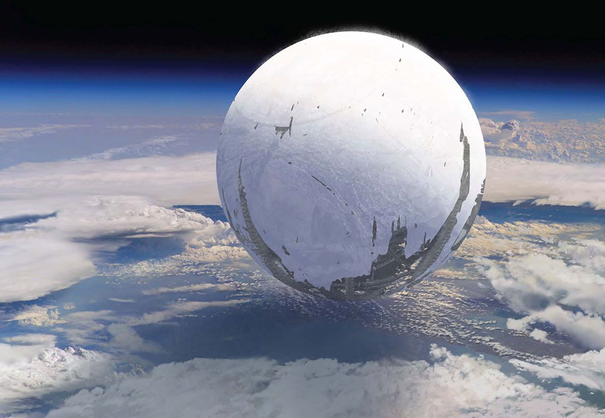

Everything Changed.
Everything changed with the coming of the Traveler. It gave us gifts that transformed the solar system and the nature of human life. It ushered in the Golden Age, a time of miracles. But it never shared its deepest secrets. Where did the Traveler come from? Why did it offer us so much? Did it know it was being hunted across the stars? And why, when the Darkness came, did it choose to stay and fight for us? Now the Traveler hangs, silent, above humanity's final sanctuary. It may be healing. It may be dying. It gave everything it had to save us. And now its power lies with us, its Guardians.
"Certain positions - often labeled heretical - imply that the Traveler itself triggered the Collapse, or that it knew the Darkness was coming for it and hoped to use the Solar System as a sacrifice or a proxy army."